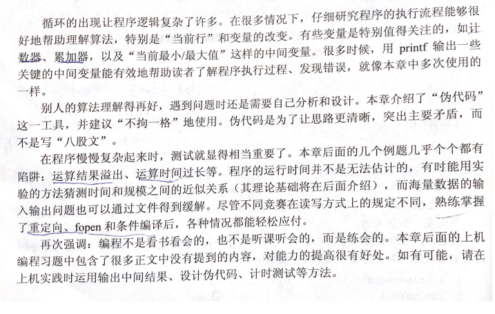

个人笔记，仅供参考，我要好好学编程!!!。
大纲 习题 习题2-1 水仙花数 题目 输出100~999中的所有水仙花数，若三位数ABC满足ABC=A³+B³+C³，则称其为水仙花数。如153=1³+5³+3³，所以153就是水仙花数。
思路 设置一个for循环，让变量i在100-999里进行逐个条件验证，满足水仙花数条件的当即输出该值。
答案 1 2 3 4 5 6 7 8 9 10 11 12 13 14 15 16 #include <stdio.h> int main() { int i,a,b,c; for(i=100;i<=999;i++) { a=i/100; b=i/10%10; c=i%10; if(i==a*a*a+b*b*b+c*c*c) { printf("%d ",i); } } return 0; }
输出 习题2-2 韩信点兵 题目 相传韩信才智过人，从不直接清点自己军队的人数，只要让士兵先后以三人一排、五人一排、七人一排地变换队形，而他每次只掠一眼队伍的排尾就知道总人数了。输入包含多组数据，每组数据包含3个非负整数a,b,c，表示每种队形排尾的人数（a<3,b<5,c<7）,输出总人数的最小值（或报告无解）。已知总人数不小于10，不超过100，输入到文件结束为止。
1 2 3 4 5 6 7 样例输入： 2 1 6 2 1 3 样例输出： Case 1: 41 Case 2 :No answer
data.in
思路 这里列出基础版 、重定向版 和fopen版 两种方式
答案 1 2 3 4 5 6 7 8 9 10 11 12 13 14 15 16 17 18 19 20 21 22 //基础版 #include <stdio.h> int main() { int n,i,q[3]; for(i=0;i<=2;i++) { scanf("%d",&q[i]); } for(n=10;n<=100;n++) { if(n%3==q[0] && n%5==q[1] && n%7==q[2]) { printf("%d\n",n); break; } } if(n==101) printf("No answer\n"); return 0; }
1 2 3 4 5 6 7 8 9 10 11 12 13 14 15 16 17 18 19 20 21 22 23 24 25 26 //重定向版 #define LOCAL #include <stdio.h> int main() { #ifdef LOCAL freopen("data.in","r",stdin); freopen("data7.out","w",stdout); #endif int q[3],kase=1; //这里声明一个具有3个元素的数组用来存放队尾数据，kase则是计数器 while(scanf("%d %d %d",&q[0],&q[1],&q[2])==3) { for(int n=10;n<=100;n++) { if(n%3==q[0] && n%5==q[1] && n%7==q[2]) { printf("Case %d: %d\n",kase++,n); } } printf("Case %d: No answer!\n",kase++); break; } }
1 2 3 4 5 6 7 8 9 10 11 12 13 14 15 16 17 18 19 20 21 22 23 24 //fopen版本 #include <stdio.h> int main() { FILE *fin, *fout; fin = fopen("data.in","r"); fout = fopen("data5.out","w"); int q[3],kase=1; //这里声明一个具有3个元素的数组用来存放队尾数据，kase则是计数器 while(fscanf(fin,"%d %d %d",&q[0],&q[1],&q[2])==3) { for(int n=10;n<=100;n++) { if(n%3==q[0] && n%5==q[1] && n%7==q[2]) { fprintf(fout,"Case %d: %d\n",kase++,n); } } fprintf(fout,"Case %d: No answer!\n",kase++); break; } }
习题2-3 倒三角形 题目 输入正整数n≤20，输出一个n层的倒三角。例如，n=5时输出如下：
1 2 3 4 5 ######### ####### ##### ### #
思路 设计思路：设置两个循环然后嵌套，第一层循环控制行数，第二层循环控制输出空格和#。
答案 1 2 3 4 5 6 7 8 9 10 11 12 13 14 15 16 17 18 19 20 #include <stdio.h> int main() { int n,i,j,k; scanf("%d",&n); for(i=n;i>=1;i--) { for(j=1;j<=n-i;j++) { printf(" "); } for(k=1;k<=2*i-1;k++) { printf("#"); } printf("\n"); } return 0; }
习题2-4 子序列的和 题目 输入两个正整数 n<m<10^{6}，输出 1 n 2 + 1 n + 1 2 + … + 1 m 2 ，保留5位小数。输出包含多组数据，结束标记为 n=m=0。
思路 核心算法：1、声明浮点型变量用于存储数据并且进行累加；2、while循环条件用来判断是否有0 0输入来结束。
答案 1 2 3 4 5 6 7 8 9 10 11 12 13 14 15 16 17 18 19 20 21 22 23 24 25 26 27 28 29 30 31 32 33 #include <stdio.h> #define MAX 1000000 int main() { FILE *fin,*fout; fin = fopen("data.in","r"); fout = fopen("data.out","w"); int kase=1; double n,m,s=0,t=0; while(fscanf(fin,"%lf %lf",&n,&m)==2 && n && m) { s=0; if(n<m && m<MAX) { printf("%.f %.f\n",n,m); for(int i=0;n+i<=m;i++) { t=1/((n+i)*(n+i)); s=s+t; } } fprintf(fout,"Case %d: %.5f\n",kase++,s); } fclose(fin); fclose(fout); return 0; }
习题2-5 分数化小数 题目 输入正整数a,b,c,输出a/b的小数形式，精确到小数点后c位。a,b≤10⁶, c≤100。输入包含多组数据，结束标记为 a=b=c=0。
思路 核心算法：1、在于先求出浮点型结果扩大10^c倍后再强制转化成整型数据，剔除小数点c位后的数值，最后选择用%g的输出格式除去输出时多余的0；声明一个kase计数器来记录当前的样例序号。
答案 1 2 3 4 5 6 7 8 9 10 11 12 13 14 15 16 17 18 19 20 21 22 23 24 25 26 27 28 #include <stdio.h> int main() { FILE *fin,*fout; fin = fopen("25.in","r"); fout = fopen("25.out","w"); int kase=1; float a,b,c,d,e=1.0; int f; while(fscanf(fin,"%f %f %f",&a,&b,&c)==3 && a && b && c) { if(a<=1000000 && b<=1000000 && c<=100) { for(int i=1;i<=c;i++) { e*=10; } d=a/b*e; f = (int) (d+0.5); d=f/e; fprintf(fout,"Case %d: %g",kase++,d); } } fclose(fin); fclose(fout); return 0; }
习题2-6 排列 题目 用1,2,3,…,9组成3个三位数abc，def和ghi，每个数字恰好使用一次，求abc:def:ghi=1:2:3。按照“abc def ghi”的格式输出所有解，每行一个解。提示：不必太动脑筋。
思路 例题不多详解，上代码(QAQ讲道理这道题因为题目的最后一句话我反而多想了…)
1 2 3 4 5 6 7 8 9 10 11 12 13 14 15 16 17 18 19 20 21 22 23 24 25 26 27 28 29 30 31 32 33 34 35 36 37 38 39 40 41 42 43 44 45 46 47 48 49 50 51 52 53 //我的傻逼做法 #include <stdio.h> int main() { int a,b,c,d,e,f,g,h,i,x,y,z,j,k,l,r,s,t,q[864],p[504],u[10]; for(int l=0;l<=10;l++) { u[l]=0; } for(i=123;i<=987;i++) { for(j=0;j<=863;j++) { q[j]=i; // printf("%d\n",q[j]); x=q[j]/100; y=q[j]/10%10; z=q[j]%10; // printf("%d %d %d\n",x,y,z); //到这里正常 if(x!=y && y!=z && x!=z) { for(k=0;k<=503;k++) { p[k]=x*100+y*10+z; // printf("%d\n",p[k]); //到这里正常 r=p[k]; s=2*p[k]; t=3*p[k]; if(t<=987 && r<=329) { // printf("[1]%d %d %d\n",r,s,t) a=r/100+r/10%10+r%10+s/100+s/10%10+s%10+t/100+t/10%10+t%10; b=(r/100)*(r/10%10)*(r%10)*(s/100)*(s/10%10)*(s%10)*(t/100)*(t/10%10)*(t%10); // printf("[1]%d\n",b); // printf("[2]%d\n",a); if(a==45 && b==362880) { for(int m=1;m<=3;m++) { printf("%d %d %d\n",r,s,t); break; } } } break; } break; } } } return 0; }
1 2 3 4 5 6 7 8 9 10 11 12 13 14 15 16 17 18 19 20 21 22 23 24 25 26 27 28 29 30 //大神的做法 #include <stdio.h> void result(int num, int &result_add, int &result_mul) { int i,j,k; i = num / 100; j = num / 10 % 10; k = num % 10; result_add += i + j + k; result_mul *= i * j * k; } int main() { int i,j,k; int result_add, result_mul; for( i = 123; i <= 329; i++) { j = i * 2; k = i * 3; result_add = 0; result_mul = 1; result(i, result_add, result_mul); result(j, result_add, result_mul); result(k, result_add, result_mul); if(result_add == 45 && result_mul == 362880) printf("%d %d %d\n", i, j, k); } return 0; }
输出 1 2 3 4 192 384 576 219 438 657 273 546 819 327 654 981
题目1 假设需要输出2,4,6,8,···,2n，每个一行，能不通过对程序2-1进行小小的改动来实现呢？为了方便，现把程序复制如下：
1 2 3 4 5 6 7 8 9 10 #include<stdio.h> int main() { int n; scanf("%d,&n"); for(int i = 1; i <= n; i++> printf"%d\n',i); return 0; }
任务1 修改第7行，不修改第6行。 任务2 修改第6行，不修改第7行。 题目2 下面的程序运行结果是什么？“！=”运算符表示“不相等”。提示：请上机实验，不要凭主观感觉回答。
1 2 3 4 5 6 7 8 #include<stdio.h> int main() { double i; for(i = 0; i != 10; i += 0.1) printf("%.1f\n",i); return 0; }
结果 1、实验结果并不是10或者10.0的问题，根本原因在于i本身就是浮点型数据
输出 1 2 3 4 5 6 7 8 9 10 11 12 13 14 15 16 17 18 19 20 21 22 23 24 25 26 27 28 29 30 31 32 33 34 35 36 37 38 39 40 41 42 43 44 45 46 47 48 49 50 51 52 53 54 55 56 57 58 59 60 61 62 63 64 65 66 67 68 69 70 71 72 73 74 75 76 77 78 79 80 81 82 83 84 85 86 87 88 89 90 91 92 93 94 95 96 97 98 99 100 101 102 103 104 105 106 107 108 109 110 111 112 113 114 115 116 117 118 119 120 121 Last login: Tue Nov 5 21:24:51 on ttys000 root:~ easyc$ /Users/easyc/Desktop/算法竞赛/第一部分\ 语言篇/第2章\ 循环结构程序设计/2.5\ 注释与习题/8 ; exit;0.0 0.1 0.2 0.3 0.4 0.5 0.6 0.7 0.8 0.9 1.0 1.1 1.2 1.3 1.4 1.5 1.6 1.7 1.8 1.9 2.0 2.1 2.2 2.3 2.4 2.5 2.6 2.7 2.8 2.9 3.0 3.1 3.2 3.3 3.4 3.5 3.6 3.7 3.8 3.9 4.0 4.1 4.2 4.3 4.4 4.5 4.6 4.7 4.8 4.9 5.0 5.1 5.2 5.3 5.4 5.5 5.6 5.7 5.8 5.9 6.0 6.1 6.2 6.3 6.4 6.5 6.6 6.7 6.8 6.9 7.0 7.1 7.2 7.3 7.4 7.5 7.6 7.7 7.8 7.9 8.0 8.1 8.2 8.3 8.4 8.5 8.6 8.7 8.8 8.9 9.0 9.1 9.2 9.3 9.4 9.5 9.6 9.7 9.8 9.9 10.0 10.1 10.2 10.3 10.4 10.5 10.6 10.7 10.8 10.9 11.0 11.1 11.2 11.3 11.4 11.5 11.6 11.7 11.8 ......
小结 
最后更新时间：2019-11-14 04:29:47